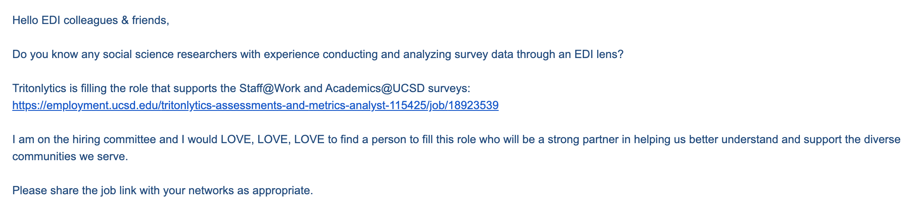
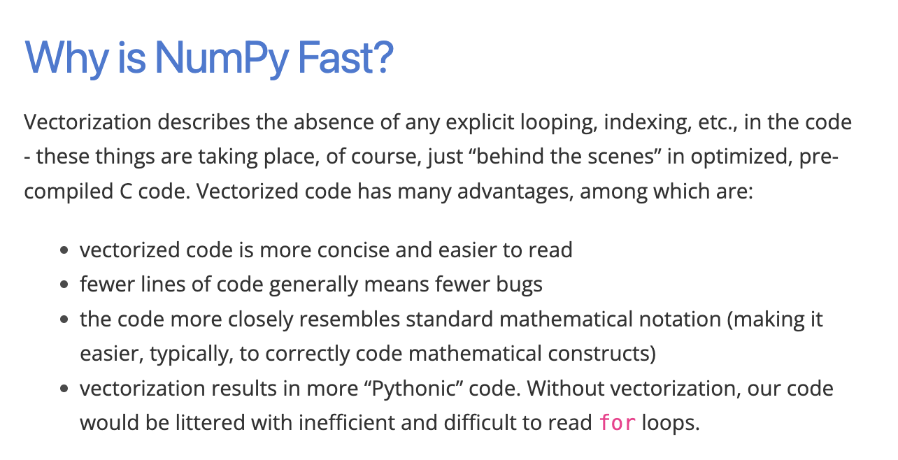

Lecture 4 (4/4/22)¶
Last time we covered:
Data structures: lists, dictionaries, sets
Loops & conditions
Today’s agenda:
Datahub
Functions
numpy basics
First, a little motivation¶

Datahub¶
This week’s lab will be available on datahub.ucsd.edu during the first lab session today.
In lab, Purva will go over how to pull assignments down on datahub and help you work through the lab problems.
This lab will be coding practice that should help a lot with this week’s problem set :) and will be due next week before lab.
Functions¶
Understanding why we use functions, how to write them, and how things can go wrong are really important to coding at all levels. I can’t stress this enough!
We won’t have as much time to dedicate to functions as we should so if any of this feels shaky, please reach out!
What are functions for?
How to write them
If time: scoping
"""
Function cookbook
def name_of_function([optional: parameters]):
CODE HERE
[optional: return X]
"""
# Simple example: how to add two numbers
def add_two(num1, num2):
return
# More tricky example: let's solve the fizzbuzz problem using a function!
# See: https://en.wikipedia.org/wiki/Fizz_buzz
# If time: function scope
# Ex. passing in the fizzbuzz list, modifying in the function w/o returning it
That’s it on functions. You’re going to practice writing a relatively simple function in this week’s lab. This week’s problem set will involve several problems that require slighly more complex functions, so if this still feels shaky by the end of this week, come on by office hours!
Numpy!¶
First, what is numpy??¶
Numpy is a python library that’s made to support fast and reliable scientific computing. Cool.
import numpy as np
For our purposes, there are two primary things we need to know about numpy:
It’s based around using numpy arrays instead of traditional python lists
It offers a wide range of mathematical tools and operations over these arrays
What’s the difference?
boring_list = [1, 2, 3, 4, 5, 6]
cool_array = np.array([1, 2, 3, 4, 5, 6])
print(type(boring_list))
print(type(cool_array))
<class 'list'>
<class 'numpy.ndarray'>
# How to square our list of numbers above?
y = [val**2 for val in boring_list] # traditional python list comprehension
y = np.square(cool_array) # numpy syntax: we do the operation over the array (no iteration, nice tidy operation)
y
array([ 1, 4, 9, 16, 25, 36])
There’s a lot more to say about numpy arrays and array operations than we’ll have time for.
It’s worth peeking a bit at their website to get a deeper explanation of some of this stuff.
Numpy arrays: more than meets the eye¶
One important and fundamental difference between numpy arrays and python lists is that arrays have to have the same kind of object inside them.
First, this helps avoid some of the pitfalls of traditional python lists.
confusing_list = [1, 2, '3', '4', 5.0]
confusing_list # python lets us put different kinds of stuff in a list...
[1, 2, '3', '4', 5.0]
# ...but when we try to do operations with it, that can get us into trouble
[elem + 1 for elem in confusing_list]
---------------------------------------------------------------------------
TypeError Traceback (most recent call last)
<ipython-input-8-1dc3831acc0c> in <module>
1 # ...but when we try to do operations with it, that can get us into trouble
----> 2 [elem + 1 for elem in confusing_list]
<ipython-input-8-1dc3831acc0c> in <listcomp>(.0)
1 # ...but when we try to do operations with it, that can get us into trouble
----> 2 [elem + 1 for elem in confusing_list]
TypeError: can only concatenate str (not "int") to str
clear_array = np.array([1, 2, '3', '4', 5.0])
clear_array # numpy automatically chooses a format for these values
array(['1', '2', '3', '4', '5.0'], dtype='<U21')
clear_array = np.array([1, 2, '3', '4', 5.0], dtype='float') # or we can set one ourselves
clear_array
array([1., 2., 3., 4., 5.])
clear_array + 1 # that lets us operate on them super easily
array([2., 3., 4., 5., 6.])
Second, operating with numpy arrays can make our code a lot cleaner.
import random
# Let's make a python list of 10000 random values between 0 and 1
x = [random.random() for _ in range(10000)]
print(x[:10])
[0.9378534611386347, 0.8049117418740378, 0.13681348302660967, 0.5528709754511388, 0.2038347551483748, 0.26392041319648485, 0.5979705807188765, 0.10643115213004772, 0.09779576571343618, 0.24743583725343865]
# Now, we want a new list that calculates 1/x
y = []
for value in x:
y.append(1/value)
print(y[:10])
[1.066264658005222, 1.2423722353356996, 7.309221122639674, 1.808740274679833, 4.905934708102565, 3.7890210457328846, 1.6723230744860493, 9.395745324433815, 10.22539158730274, 4.041451760181933]
# The code above is pretty clunky. With numpy, it's super straightforward.
array_x = np.asarray(x)
array_y = 1/array_x
array_y
array([ 1.06626466, 1.24237224, 7.30922112, ..., 11.76317289,
2.47029907, 5.43672694])
Third, this makes operations with numpy arrays way faster. Like, a lot.
x = [random.random() for _ in range(10000)]
array_x = np.asarray(x)
# How long does it take to square everything in our list with normal python operations?
%timeit y = [val**2 for val in x]
979 µs ± 7.7 µs per loop (mean ± std. dev. of 7 runs, 1000 loops each)
# What about with numpy?
%timeit array_y = np.square(array_x)
6.45 µs ± 77 ns per loop (mean ± std. dev. of 7 runs, 100000 loops each)
Why are numpy operations so different from operating on python lists?
Numpy operations use vectorization on numpy arrays, meaning that the the operation is performed on the whole array at once (for the person coding), rather than having to iterate through the list (source).

Numpy arrays -> matrices¶
The numpy array generalizes to matrices and supports a lot of simple slicing and dicing.
While we likely won’t use numpy matrices as much in this course, it’s worth knowing about them.
a = np.ones((3, 2))
print(a)
rng = np.random.default_rng(0)
a = rng.random((3, 2))
print(a)
[[1. 1.]
[1. 1.]
[1. 1.]]
[[0.63696169 0.26978671]
[0.04097352 0.01652764]
[0.81327024 0.91275558]]
print(a.ndim) # number of dimensions
print(a.shape) # number of values in each dimension
print(a.size) # total number of cells
2
(3, 2)
6
print(np.max(a)) # maximum operation over the whole matrix
print(np.max(a, axis = 0)) # maximum operation can specify an "axis": 0 (columns) or 1 (rows)
0.9127555772777217
[0.81327024 0.91275558]
One more thing: pandas is built on numpy¶
It’s good to be familiar with numpy syntax and functions:
Sometimes we’ll use them in our code (esp. the super fast numpy operations)
And some things we do in pandas will be similar to numpy